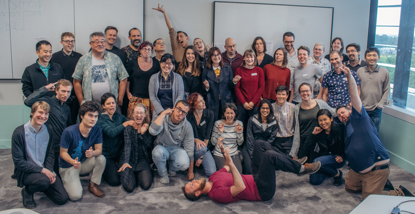

Jan 23, 2019
We’re rolling out two new newsletter sections:
- Call for Contributors: Software occassionally needs new maintainers. Checkout this section if you’re looking to get involved in maintaining software.
- Related News: If you’re interested to hear what’s going in related communities, this section is for you.
Keep reading to see the first installment of these new sections.
Software 📦
CRAN:  GitHub:
GitHub: 
New Packages
- The firsts version (
v0.1.1) ofstats19is on CRAN - Work with Open Road Traffic Casualty Data from Great Britain. See the release notes for changes. Checkout the docs to get started.

New Versions
- A new version (
v0.2.0) ofpubchunksis on CRAN - Fetch Sections of XML Scholarly Articles. See the release notes for changes. Checkout the README to get started.
default extraction attempts for most section types; better pub_chunks print fxn
- A new version (
v3.0.6) ofrotlis on CRAN - an interface to the Open Tree of Life API. See the release notes for changes. Checkout the vignettes to get started.
minor update for CRAN warnings
- A new version (
v0.3.0) ofgeojsonis on CRAN - Classes for GeoJSON. See the release notes for changes. See also our forum post with details on the major updates. Checkout the vignettes to get started.
new fxns
ndgeo_read/ndgeo_writefor newline-delimited GeoJSON; sf method for as.geojson - A new version (
v1.3.2) ofGSODRis on CRAN - Global Surface Summary of the Day (GSOD) Weather Data from R. See the release notes for changes. Checkout the docs to get started.
get_gsodbug fix - A new version (
v2.1) ofpdftoolsis on CRAN - Text extraction, rendering and converting of PDF documents. See the release notes for changes. Checkout the README to get started.
update poppler to v0.73 for Windows/macOS
- A new version (
v0.2.2) ofrdflibis on CRAN - high level wrapper around the redland rdf package. See the release notes for changes. Checkout the docs to get started.
fix license file; hex in docs
- A new version (
v0.9.0) ofrcrossrefis on CRAN - R client for the Crossref API. See the release notes for changes. Checkout the rcrossref vignette to get started.
big update to the Crossref RStudio Addin; async HTTP requests for some fxns
- A new version (
v0.8.4) ofrnoaais on CRAN - NOAA Weather Data from R. See the release notes for changes. Checkout the vignettes to get started.
fail better during US federal government shutdown
- A new version (
v1.0.4) ofskimris on CRAN - compact and flexible summaries of data. See the release notes for changes. Checkout the vignettes to get started.
fix to handling dplyr verbs
- A new version (
v0.2.2) ofvcris on CRAN - record HTTP calls to disk for test caching. See the release notes for changes. Checkout the HTTP testing book to get started.
change suggested usage of
vcr::use_cassette() - A new version (
v0.6.0) ofepubris on CRAN - read EPUB File Metadata and Text. See the release notes for changes. Checkout the docs to get started.
improved word count accuracy; new fxns
count_words(),epub_recombine(),epub_sift(),epub_reorder() - A new version (
v2.5.6) ofFedDatais on CRAN - get geospatial data from several federated government data sources. See the release notes for changes. Checkout the README to get started.
remove dependency on soilDB pkg
- A new version (
v0.1.6) ofspatsocis on CRAN - detecting spatial and temporal groups in GPS relocations. See the release notes for changes. Checkout the docs to get started.
bug fix
- A new version (
v0.4.1) ofnomisris on CRAN - access UK official statistics from the Nomis database. See the release notes for changes. Checkout the docs to get started.
add
query_idparameter tonomis_get_data(); bug fix - A new version (
v0.3.0) ofwebmockris on CRAN - stubbing and setting expectations on HTTP requests. See the release notes for changes. Checkout the HTTP testing book to get started.
mocked response header fixes; update to match new
response_headers_alloutput forcrulpackage responses - A new version (
v3.2-1) ofclifrois on CRAN - easily download and visualise climate data from CliFlo. See the release notes for changes. Checkout the vignettes to get started. - A new version (
v1.0.4) ofnasapoweris on CRAN - NASA POWER API Client. See the release notes for changes. Checkout the docs to get started.
better docs; vignette fix for CRAN
- A new version (
v0.0.9) ofpiggybackis on CRAN - Managing larger data on a GitHub repository. See the release notes for changes. Checkout the docs to get started.
Enable re-upload and deletion of partially uploaded files
- A new version (
v0.24.0) ofgit2ris on CRAN - an interface to the libgit2 library, a pure C implementation of the Git core methods. See the release notes for changes. Checkout the README to get started.
bug fixes
Software Review ✔
We accept community contributed packages via our onboarding system - an open software review system, sorta like scholarly paper review, but way better. We’ll highlight newly onboarded packages here. A huge thanks to our reviewers, who do a lot of work reviewing (see the blog post on our review system), and the authors of the packages!
If you want to be a reviewer fill out this short form, and we’ll ping you when there’s a submission that fits in your area of expertise.
The following packages recently went through our onboarding process and have been approved!
- babette > Control BEAST2 from R
- Author: Richel Bilderbeek
- Issue: ropensci/onboarding#209
- Reviewers:
- stats19 > Work with open road traffic casualty data from Great Britain
- Author: Robin Lovelace
- Issue: ropensci/onboarding#266
- Reviewers:
- nlrx > Setup, run and analyze NetLogo model simulations from R via XML
- Author: Jan Salecker
- Issue: ropensci/onboarding#262
- Reviewers:
The following packages were recently submitted:
- tacmagic > PET (positron emission tomography) Analysis in R
- Author: Eric Brown
- Issue: ropensci/onboarding#277
- Reviewers: not yet assigned
- osfr > R Interface to OSF
- Author: Aaron Wolen
- Issue: ropensci/onboarding#279
- Reviewers: not yet assigned
On the blog
rOpenSci HQ
rOpenSci has a new code of conduct! Make sure to read the blog post rOpenSci’s new Code of Conduct, the new text of the code of conduct, which also contains reporting guidelines.
Software Review
Stin Van Hoey and Peter Desmet wrote about their recently rOpenSci reviewed package wateRinfo, for downloading time series data from Waterinfo.be. wateRinfo - Downloading tidal data to understand the behaviour of a migrating eel

Australia Unconference
Nicholas Tierney wrote about the recent ozunconf held in Brisbane, Australia: Continuing to Grow Community Together at ozunconf, 2018. Nick does a nice job describing the unconference, some highlights of the projects, and some great pictures of the event. Also, check out Episode 6 of Credibly Curious, a podcast by Nick and Saskia Freytag, for a discussion of the unconference.

Mitchell O’Hara-Wild wrote about one ozunconf project called vitae - vitae: Dynamic CVs with R Markdown. He writes about the motivation for the package, the design of the package, and goes through an example. vitae source is on GitHub, and is on CRAN.

Tech Notes
Maëlle Salmon wroute about changes to the rOpenSci website: An even better rOpenSci website with Hugo. A few highlights: new authors pages with posts by each author; cool new error page; the new place to go to find out about rOpenSci community calls is https://ropensci.org/commcalls/.
Use Cases
The following 18 works use/cite rOpenSci software:
- Duan et al. used plotly in their paper Dosage Compensation of the X Chromosomes in Bovine Germline, Early Embryos and Somatic Tissues 1
- Martinková & Drabinová used plotly in their paper ShinyItemAnalysis for Teaching Psychometrics and to Enforce Routine Analysis of Educational Tests 2
- Alexander & Alexander used hunspell and pdftools in their paper on The Effect of Elections and Prime Ministers on Discussion in the Australian Federal Parliament (1901–2018) (NOTE: the pdf has since been removed. get in touch with us if you want a copy) 3
- Da Silva, & Conde used taxize in their paper Data on the conservation potential of fish and coral populations in aquariums 4
- Sclavi & Herrick used taxize in their paper Genome size variation and species diversity in salamanders 5
- López-Jurado et al. used rgbif in their paper Niche divergence and limits to expansion in the high polyploid Dianthus broteri complex 6
- Green used rotl in their paper Rarity of Size-Assortative Mating in Animals: Assessing the Evidence with Anuran Amphibians 7
- Mathot et al. used rotl in their paper The covariance between metabolic rate and behaviour varies across behaviours and thermal types: meta-analytic insights 8
- Bennett et al. used rentrez in their paper on another rOpenSci package restez: Create and Query a Local Copy of GenBank in R 9
- Vantas wrote a paper describing the rOpenSci package hydroscoper: hydroscoper: R interface to the Greek National Data Bank for Hydrological and Meteorological Information 10
- Rivero et al. used chromer in their paper EyeChrom and CCDBcurator: Visualizing chromosome count data from plants 11
- Chelick used spocc in their dissertation Predicting taxonomic, functional and phylogenetic diversity of plant assemblages in the Okanagan ecoregion 12
- Langhammer et al. used landscapetools and NLMR in their paper Agricultural landscape generators for simulation models: A review of existing solutions and an outline of future directions 13
- Yeomans et al. used hunspell in their paper The politeness Package: Detecting Politeness in Natural Language 14
- Spalink et al. used rgbif in their paper Phylogeography, population genetics, and distribution modeling reveal vulnerability of Scirpus longii (Cyperaceae) and the Atlantic Coastal Plain Flora to climate change 15
- Brooks et al. used rentrez in their paper A Curated, Comprehensive Database of Plasmid Sequences 16
- Ficcadenti et al. used tokenizers in their paper A joint text mining-rank size investigation of the rhetoric structures of the US Presidents’ speeches 17
- Muñoz et al. used taxize in their paper A synthesis of animal-mediated seed dispersal of palms reveals distinct biogeographical differences in species interactions 18
In The News
Maarten Hermans wrote a nice post, Exploring historical maps and spatial data with R and OpenStreetMap, using many packages, including our package osmdata maintained by Mark Padgham et al.

Call For Contributors
Part of the mission of rOpenSci is making sustainable software that users can rely on. Some software maintainers need to give up maintanence due to a variety of circumstances. When that happens we try to find new maintainers. We’ve had two recent examples of maintainer transitions within rOpenSci:
- RSelenium: now maintained by Ju Kim
- chromer: now maintained by Paula Andrea
We’ve got one package in need of a new maintainer:
- webchem: The current maintainer of webchem, Eduard Szöcs, is looking for a new maintainer. See issue #155. Do ping Eduard in that issue and/or email us at info@ropensci.org
Related News
- The Python programming language is going through a change of leadership. It used to have a BDFL model, a single leader. But the leader has left and now the Python community is deciding what leadership model they want. Brett Cannon has a nice post on the topic: An update on Python’s governance.
- The US federal government shutdown is still going. Bob Rudis wrote a nice post on Roll Your Own Federal Government Shutdown-caused SSL Certificate Expiration Monitor in R in which he shows some very on topic data munging of federal government websites.
- A shout out to a probably lesser know place to share and gain R knowledge: If you haven’t heard of dev.to, it’s a sort of developer forum for sharing articles and discussing. They have an R tag https://dev.to/t/r and an rstats tag https://dev.to/t/rstats - the former has more traffic.
- Some rOpenSci community members are running independent local unconferences (inspired by but not affiliated with rOpenSci). The Uncoast Unconference aims to bring R users and developers together in flyover country and runs April 14-16 in Des Moines, Iowa. Application deadline is 5 February. The Chicago R Unconference runs March 9-10. Application deadline is 16 February.
Keep up with rOpenSci
- Mailing list: Sign up with an email address to get this newsletter sent to your inbox -> ropensci.org/#subscribe
- Alternatively, you can subscribe to this newsletter via our XML feed at https://news.ropensci.org/feed.xml or our JSON feed at https://news.ropensci.org/feed.json
- rOpenSci on Twitter: @ropensci
- The rOpenSci blog at ropensci.org/blog - you can subscribe in any RSS aggregator, or manually via https://ropensci.org/feed.xml. We also announce new blog posts on our Twitter account.
Footnotes
-
Duan, J., Wei Shi, Nathaniel K Jue, Zongliang Jiang, Lynn Kuo, Rachel O’Neill, Eckhard Wolf, Hong Dong, Xinbao Zheng, Jingbo Chen, Xiuchun (Cindy) Tian. 2018. Dosage Compensation of the X Chromosomes in Bovine Germline, Early Embryos and Somatic Tissues. Genome Biology and Evolution. https://academic.oup.com/gbe/advance-article/doi/10.1093/gbe/evy270/5253178 ↩
-
Martinková, P., & Drabinová, A. ShinyItemAnalysis for Teaching Psychometrics and to Enforce Routine Analysis of Educational Tests. The R Journal. https://journal.r-project.org/archive/2018/RJ-2018-074/RJ-2018-074.pdf ↩
-
Alexander, M., and Alexander, R. 2018. The Effect of Elections and Prime Ministers on Discussion in the Australian Federal Parliament (1901–2018). https://rohanalexander.com/pdf/2018-12-16-events.pdf ↩
-
Da Silva, R., & Conde, D. A. (2018). Data on the conservation potential of fish and coral populations in aquariums. Data in Brief. https://doi.org/10.1016/j.dib.2018.12.083 ↩
-
Sclavi, B., & Herrick, J. (2018). Genome size variation and species diversity in salamanders. Journal of Evolutionary Biology. https://doi.org/10.1111/jeb.13412 ↩
-
López-Jurado, J., Mateos-Naranjo, E., & Balao, F. (2018). Niche divergence and limits to expansion in the high polyploid Dianthus broteri complex. New Phytologist. https://doi.org/10.1111/nph.15663 ↩
-
Green, D. M. (2019). Rarity of Size-Assortative Mating in Animals: Assessing the Evidence with Anuran Amphibians. The American Naturalist, 193(2) https://www.journals.uchicago.edu/doi/abs/10.1086/701124 ↩
-
Mathot, K. J., Dingemanse, N. J., & Nakagawa, S. (2018). The covariance between metabolic rate and behaviour varies across behaviours and thermal types: meta-analytic insights. Biological Reviews. https://doi.org/10.1111/brv.12491 ↩
-
Bennett, D., Hettling, H., Silvestro, D., Vos, R., & Antonelli, A. (2018). restez: Create and Query a Local Copy of GenBank in R. Journal of Open Source Software, 3(31), 1102. https://doi.org/10.21105/joss.01102 ↩
-
Vantas, K. (2018). hydroscoper: R interface to the Greek National Data Bank for Hydrological and Meteorological Information. Journal of Open Source Software, 3(23), 625. https://doi.org/10.21105/joss.00625 ↩
-
Rivero, R., Sessa, E. B., & Zenil-Ferguson, R. (2019). EyeChrom and CCDBcurator: Visualizing chromosome count data from plants. Applications in Plant Sciences, e01207. https://doi.org/10.1002/aps3.1207 ↩
-
Chelick, C. C. (2019). Predicting taxonomic, functional and phylogenetic diversity of plant assemblages in the Okanagan ecoregion (Doctoral dissertation, University of British Columbia). https://open.library.ubc.ca/collections/ubctheses/24/items/1.0375860 ↩
-
Langhammer, M., Thober, J., Lange, M., Frank, K., & Grimm, V. (2019). Agricultural landscape generators for simulation models: A review of existing solutions and an outline of future directions. Ecological Modelling, 393, 135–151. https://doi.org/10.1016/j.ecolmodel.2018.12.010 ↩
-
Yeomans, M., Kantor, A., & Tingley, D. (2018). The politeness Package: Detecting Politeness in Natural Language. The R Journal. https://journal.r-project.org/archive/2018/RJ-2018-067/RJ-2018-067.pdf ↩
-
Spalink, D., MacKay, R., & Sytsma, K. J. (2019). Phylogeography, population genetics, and distribution modeling reveal vulnerability of Scirpus longii (Cyperaceae) and the Atlantic Coastal Plain Flora to climate change. Molecular Ecology. https://doi.org/10.1111/mec.15006 ↩
-
Brooks, L., Kaze, M., & Sistrom, M. (2019). A Curated, Comprehensive Database of Plasmid Sequences. Microbiology Resource Announcements, 8(1). https://doi.org/10.1128/mra.01325-18 ↩
-
Ficcadenti, V., Cerqueti, R., & Ausloos, M. (2019). A joint text mining-rank size investigation of the rhetoric structures of the US Presidents’ speeches. Expert Systems with Applications. https://doi.org/10.1016/j.eswa.2018.12.049 ↩
-
Muñoz, G., Trøjelsgaard, K., & Kissling, W. D. (2019). A synthesis of animal-mediated seed dispersal of palms reveals distinct biogeographical differences in species interactions. Journal of Biogeography. https://doi.org/10.1111/jbi.13493 ↩